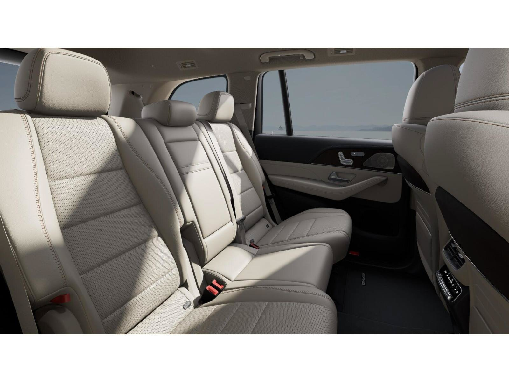

MY27 LINEUP
GLS 두 모델 한눈에 비교
외관 패키지를 고르고, 함께 타는 인원에 맞춰 2열 구성을 비교해 보세요. 해외 공개 사양은 국내 계약 사양과 다를 수 있습니다.
| 비교 항목 | GLS 450 4MATIC | GLS 450 4MATIC AMG Line |
|---|---|---|
| 차체 | 3열 대형 SUV | 3열 대형 SUV |
| 디자인 패키지 | 기본형 외관 | AMG Line 외관 · 국내 세부 패키지 확인 |
| 좌석 구성 | 2열 벤치 7인승 / 독립 시트 6인승 · 국내 주문 구성 확인 | 2열 벤치 7인승 / 독립 시트 6인승 · 국내 주문 구성 확인 |
| 좌석·기본 옵션 | 2열 통풍, 뒷좌석 화면과 컴포트 패키지 기본 여부 확인 | 스포츠 스티어링 휠, 2열 통풍과 뒷좌석 패키지 기본 여부 확인 |
| 정품 휠 · 미국 MY27 | 21인치 5 트윈 스포크 | 동일 명칭의 국내 트림에 대응하는 기본 휠 확인 필요 |
| 정품 휠 · 국내 MY27 | 국내 적용 확인 필요 | 국내 적용 확인 필요 |
| 실내 조합 | 시트 소재·색상 및 인테리어 트림 매칭 확인 | 시트 소재·색상 및 인테리어 트림 매칭 확인 |
해외 공식 자료: 미국 GLS 450 · GLS 좌석 안내
EQUIPMENT
주요 제원과 옵션
신형 450의 공개 기술과 국내 계약 전에 확인할 기본·선택 사양입니다.
| 항목 | 내용 | 적용 기준 |
|---|---|---|
| 엔진·구동 | 3.0L 직렬 6기통 터보 가솔린 · 48V ISG · 9G-TRONIC · 4MATIC | 미국 MY27 공개 사양 |
| 출력·토크 | 375 hp · 413 lb-ft | 미국 MY27 450 공개 제원 · 국내 인증 제원 확인 |
| AIRMATIC | 에어 스프링 서스펜션 | 미국형 GLS 기본 · 국내 적용 확인 |
| 운전 보조 | 앞차와 거리 유지, 차로 유지 보조 | 해외 신형은 MB.DRIVE로 소개. 국내 패키지 명칭과 구성 확인 |
| MBUX | MB.OS 기반 4세대 MBUX · 슈퍼스크린 | 해외 신형 공개 사양 |
| 오디오 | 부메스터® 서라운드 사운드 시스템 | 미국형 GLS 3D 기본 · 국내 적용 확인 |
| 선루프 | 파노라믹 선루프 | 국내 기본·선택 여부 확인 |
해외 제원과 기능: 메르세데스-벤츠 미국 MY27 발표
새 GLS의 디자인과 실내
아래 작은 사진을 누르면 큰 화면에서 전면 그릴, 별 모양 조명, 실내를 차례로 볼 수 있습니다.

사진은 신형 모델의 디자인 참고용입니다. 국내 판매 사양 및 주문 가능 조합은 상담에서 확인해 주세요.
우리 가족에게 맞는 좌석은?
두 가지 모두 3열 좌석이 있지만, 2열 모양과 사람을 태우는 방식이 다릅니다.

6인승 · 2열 독립 캡틴 시트
2열 좌석이 좌우로 나뉘고 가운데 통로가 생깁니다. 넓고 안락한 VIP 좌석이나 의전용 차량을 찾을 때 어울립니다.
2열의 여유와 편안함 우선COLOR & MATERIAL
외장 색과 실내 소재
아래는 상담에서 비교할 색상 예시입니다. 사진과 화면의 색은 실물과 다를 수 있습니다.
외장 색상 예시
- 옵시디언 블랙
- 폴라 화이트
- 셀레나이트 그레이
- 하이테크 실버
실내 소재와 색상
천연 가죽과 나파 가죽의 질감을 비교하고 블랙, 바히아 브라운, 마키아토 베이지 등 원하는 계열을 알려 주세요. 시트 소재·색상과 대시보드·도어 트림은 함께 확인해 드립니다.
트림별 주문 가능 색상, 가죽 종류 및 외장·시트·인테리어 트림 조합은 국내 MY27 사양을 확인해 안내합니다.
FEATURES IN PLAIN LANGUAGE
낯선 이름은 쉬운 말로
기능이 적용됐을 때 운전하거나 동승하며 느낄 수 있는 차이입니다. 국내 기본·선택 여부는 위 사양 안내를 참고해 주세요.
3.0L 직렬 6기통 터보 · 48V 마일드 하이브리드(ISG)
출발하거나 속도를 높일 때 작은 전기모터가 엔진을 거들고, 감속할 때는 에너지를 회수합니다. 별도로 충전할 필요가 없습니다.
AIRMATIC 서스펜션
공기 스프링이 노면의 충격을 받아 줍니다. 방지턱이나 울퉁불퉁한 길을 지날 때 차체가 덜 출렁이도록 돕습니다.
드라이빙 어시스턴스 패키지 플러스
앞차와의 거리와 속도를 조절하고 차로를 따라 달리도록 돕는 기능입니다. 정체 구간에서 반복되는 가속과 감속의 부담을 덜어 줍니다. 운전자는 계속 전방을 살피고 직접 제어해야 합니다.
MBUX 슈퍼스크린 · MB.OS
운전석 계기판과 중앙 화면, 조수석 화면이 대시보드 하나로 이어집니다. 운전자는 주행 정보를, 동승자는 자기 자리에서 이용할 화면을 볼 수 있습니다.
부메스터® 서라운드 사운드 시스템
차 안 여러 곳에서 소리가 들려, 좋아하는 음악의 보컬과 악기를 더 입체적으로 즐길 수 있습니다.
파노라믹 선루프
넓은 유리 지붕으로 햇빛이 들어와 뒷좌석에서도 실내가 한결 밝고 탁 트이게 느껴집니다.
DIGITAL LIGHT
밤에 전방을 비춰 어두운 도로의 윤곽을 살피기 쉽게 돕습니다.
MBUX 증강 현실 내비게이션
중앙 화면의 실제 도로 영상에 방향 표시를 더해 복잡한 교차로에서도 어느 쪽으로 돌아야 할지 파악하기 쉽습니다.
어쿠스틱 컴포트 패키지
차음 유리가 바람과 도로에서 들어오는 소리를 줄여 동승자와 대화하거나 음악을 듣기 편해집니다.
실제 국내 판매 사양, 색상 주문 가능 여부, 출시·배정 및 출고 일정은 변동될 수 있어 상담으로 확인해 드립니다. 이 페이지는 실시간 재고 또는 배정 현황을 보여 주지 않습니다.
원하는 GLS를 함께 찾아보세요
평소 함께 타는 인원과 원하는 외관을 알려 주세요. 좌석 구성, 주문 가능한 색상과 예상 출고 일정을 확인해 드립니다.
사전예약 상담 신청